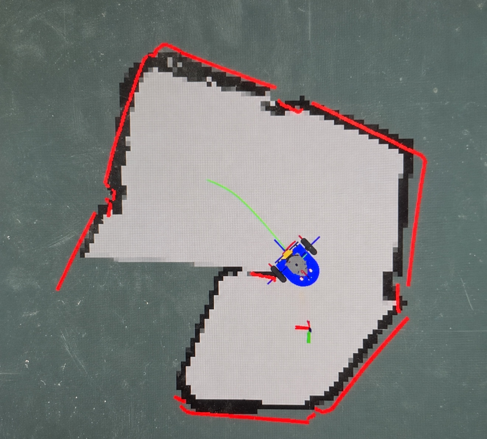

Plan routes through a maze and explore unmapped space.
Kate Cooper and I built a ROS 2 navigation system for a LiDAR-equipped MBot for the Planning and Exploration checkpoint in University of Michigan’s ROB 330 course in Fall 2026.
A ROS 2 navigation system for a LiDAR-equipped MBot that plans routes and explores a maze autonomously.
Kate Cooper and I built a ROS 2 navigation system for a LiDAR-equipped MBot for the Planning and Exploration checkpoint in University of Michigan’s ROB 330 course in Fall 2026.
We implemented an A* planner that used an obstacle-distance grid to keep the robot clear of walls, then simplified the planned route by removing unnecessary waypoints when a straight segment had enough clearance. We implemented Theta* to compare how line-of-sight shortcuts during search change the route.
We also implemented frontier-based exploration so the MBot could choose where to go as it built a map. The robot grouped boundaries between known free space and unexplored areas, selected a nearby frontier as its next goal, and sent the planned waypoints to the motion controller.
We prototyped unknown-start localization by distributing particles across free space in a known map.

We tested the planner in RViz and ran it on the physical robot in a maze mapped with LiDAR, capturing the run in a ROS 2 bag. We also demonstrated frontier-based exploration on the physical MBot.